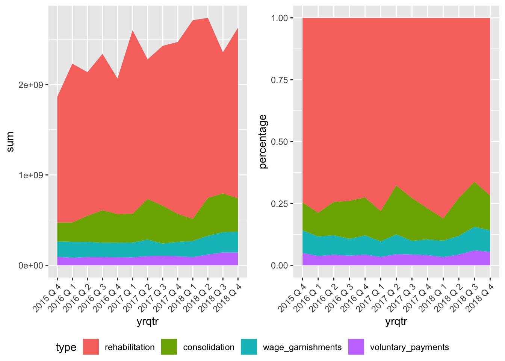
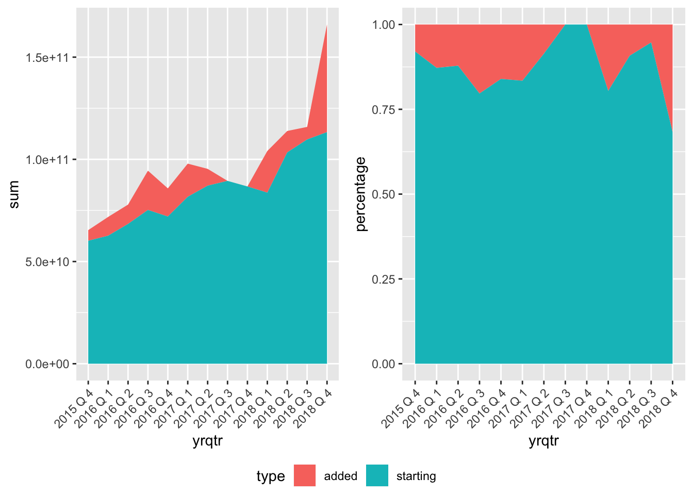
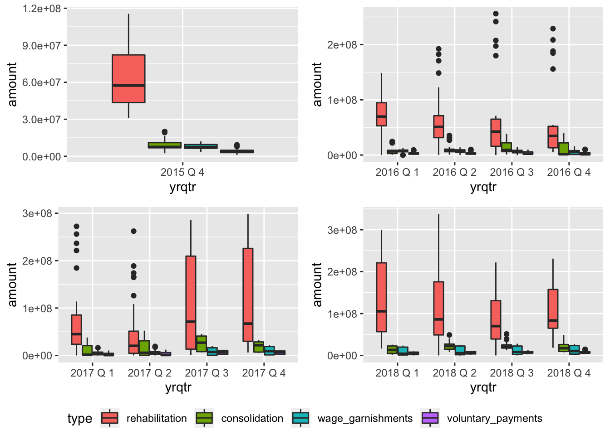
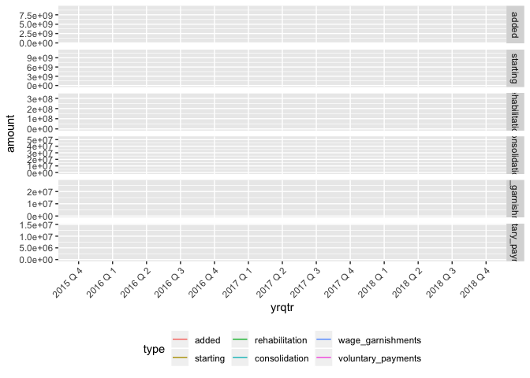

This week’s data is from the Department of Education courtesy of Alex Albright.
Data idea comes from Dignity and Debt who is running a contest around data viz for understanding and spreading awareness around Student Loan debt.
loans <- readr::read_csv("https://raw.githubusercontent.com/rfordatascience/tidytuesday/master/data/2019/2019-11-26/loans.csv")Data Dictionary
Provided by Tidy Tuesday
| variable | class | description |
|---|---|---|
| agency_name | character | Name of loan agency |
| year | integer | two digits year |
| quarter | integer | Quarter (3 month period) |
| starting | double | Inventory, Total value in dollars at start of quarter |
| added | double | Inventory, Total value added during quarter |
| total | double | Recoveries, Total dollars repaid |
| consolidation | double | Recoveries, Consolidation reflects the dollar value of loans consolidated |
| rehabilitation | double | Recoveries, Rehabilitation reflects the dollar value of loans rehabilitated |
| voluntary_payments | double | Recoveries, Voluntary payments reflects the total amount of payments received from borrowers |
| wage_garnishments | double | Recoveries, Wage Garnishments reflect the total amount of wage garnishment payments |
Preview of the data:
head(loans)I noticed some names seemed to be duplicates, such as Action Financial Services and Action Financial Services* so I combined them. I tried to find a programatic way to find and replace, but it didn’t go well, then it stopped allowing me to knit the doc. So I ended up manually editing anyway. It also seems like Account Control Technology, Inc. is the same as ACT. The red rows are those tagged as duplicates, before and after cleaning.
# make it long
loans_long <- pivot_longer(loans,
cols = starting:wage_garnishments,
names_to = "type",
values_to = "amount") %>%
mutate(year = year + 2000) %>%
mutate(yrqtr = paste(year, "Q", quarter)) %>%
mutate(yrqtr = as.factor(yrqtr))
# fix dupe names
agency_names <- sort(loans_long$agency_name)
unique(agency_names) %>%
data_frame() %>%
rename("Raw agency names" = ".") %>%
mutate(dupe_list = ifelse(`Raw agency names` %in% c("Account Control Technology, Inc.", "ACT",
"Action Financial Services*",
"Action Financial Services",
"Central Research*", "Central Research",
"Coast Professional Inc", "Coast Professional, Inc.",
"Credit Adjustments Inc", "Credit Adjustments, Inc.",
"Credit Adjustments, Inc.*", "Credit Adjustments, Inc.",
"FMS", "FMS Investment Corp",
"GC Services", "GC Services LP",
"Immediate Credit Recovery", "Immediate Credit Recovery, Inc.",
"National Recoveries Inc", "National Recoveries, Inc.",
"Pioneer", "Pioneer Credit Recovery, Inc",
"Windham", "Windham Professionals, Inc."), 1, 0)) %>%
datatable() %>%
formatStyle(columns = "Raw agency names",
valueColumns = "dupe_list",
color = styleEqual("1", "red")
)# there are some repeats
##############################################
# super long-winded way to find them ... manual scan would have been quicker
# and now it won't knit :/
# fix <- sapply(unique(agency_names), agrep, unique(agency_names), max.distance = 1, value = T)
#
# fix_df <- data.frame(unlist(fix))
#
# fix_df$row_names <- rownames(fix_df)
#
# dupes <- substring(fix_df$row_names, nchar(names)) == "2"
#
# filter <- cbind(fix_df$row_names, dupes) %>% data.frame() %>%
# filter(., dupes == "TRUE")
#
# fixes <- inner_join(fix_df, filter, by = c("row_names" = "V1")) %>%
# rename(., `new name` = unlist.fix., `old name` = row_names) %>%
# select(-dupes)
# fixes$`old name` = substr(fixes$`old name`, 1, nchar(fixes$`old name`)-1)
#
# # fixes <- fixes %>% filter(., !`old name` %in% c("Action Financial Services*", "Central Research*", "Credit Adjustments, Inc.*"))
# #
# # loans_long_fixed <- left_join(loans_long, fixes, by = c("agency_name" = "new name"))
##############################################
# fix 'em
loans_long$agency_name[which(loans_long$agency_name == "ACT")] <- "Account Control Technology, Inc."
loans_long$agency_name[which(loans_long$agency_name == "Action Financial Services*")] <- "Action Financial Services"
loans_long$agency_name[which(loans_long$agency_name == "Central Research*")] <- "Central Research"
loans_long$agency_name[which(loans_long$agency_name == "Coast Professional Inc")] <- "Coast Professional, Inc."
loans_long$agency_name[which(loans_long$agency_name == "Credit Adjustments Inc")] <- "Credit Adjustments, Inc."
loans_long$agency_name[which(loans_long$agency_name == "Credit Adjustments, Inc.*")] <- "Credit Adjustments, Inc."
loans_long$agency_name[which(loans_long$agency_name == "FMS")] <- "FMS Investment Corp"
loans_long$agency_name[which(loans_long$agency_name == "GC Services")] <- "GC Services LP"
loans_long$agency_name[which(loans_long$agency_name == "Immediate Credit Recovery")] <- "Immediate Credit Recovery, Inc."
loans_long$agency_name[which(loans_long$agency_name == "National Recoveries Inc")] <- "National Recoveries, Inc."
loans_long$agency_name[which(loans_long$agency_name == "Pioneer")] <- "Pioneer Credit Recovery, Inc"
loans_long$agency_name[which(loans_long$agency_name == "Windham")] <- "Windham Professionals, Inc."
loans_long$agency_name[which(loans_long$agency_name == "Coast Professional, Inc.")] <- "Coast Professional, Inc."
agency_names_fixed <- sort(loans_long$agency_name)
# look at 'em
unique(agency_names_fixed) %>%
data_frame() %>%
rename("Cleaned agency names" = ".") %>%
mutate(dupe_list = ifelse(`Cleaned agency names` %in% c("Account Control Technology, Inc.", "ACT",
"Action Financial Services*",
"Action Financial Services",
"Central Research*", "Central Research",
"Coast Professional Inc", "Coast Professional, Inc.",
"Credit Adjustments Inc", "Credit Adjustments, Inc.",
"Credit Adjustments, Inc.*", "Credit Adjustments, Inc.",
"FMS", "FMS Investment Corp",
"GC Services", "GC Services LP",
"Immediate Credit Recovery", "Immediate Credit Recovery, Inc.",
"National Recoveries Inc", "National Recoveries, Inc.",
"Pioneer", "Pioneer Credit Recovery, Inc",
"Windham", "Windham Professionals, Inc."), 1, 0)) %>%
DT::datatable() %>%
DT::formatStyle(columns = "Cleaned agency names",
valueColumns = "dupe_list",
color = DT::styleEqual("1", "red")
)I’m not really sure what the terms mean, so I just made some exploratory plots.
Rehabilitation was the greatest amount of the recoveries, about 75% of the total each year. Voluntary payments were pretty low, but got a slight bump in 2018.
Among inventory, starting amount was the greatest, which makes sense. There was a period in 2017 where no inventory was added. It looks like this corresponds to a slight increase in wage garnishments and decrease in consolidation. There’s a very large bump in inventory added in 2018, which looks like it corresponds to increase in rehabilitation and voluntary payments.
# area plot
# reorder
loans_long$type <- factor(loans_long$type , levels=c("added", "starting", "total", "rehabilitation", "consolidation", "wage_garnishments", "voluntary_payments"))
p1<-loans_long %>%
filter(!type %in% c("added", "total", "starting")) %>%
group_by(yrqtr, type) %>%
summarize(sum = sum(amount, na.rm = T)) %>%
mutate(percentage = sum / sum(sum, na.rm = T)) %>%
ggplot(., aes(yrqtr, sum, fill = type)) +
geom_area(aes(group = type), position = "stack") +
theme(axis.text.x = element_text(angle = 45, hjust = 1)) +
theme(legend.position = "bottom")
p2<-loans_long %>%
filter(!type %in% c("added","total", "starting")) %>%
group_by(yrqtr, type) %>%
summarize(sum = sum(amount, na.rm = T)) %>%
mutate(percentage = sum / sum(sum, na.rm = T)) %>%
ggplot(., aes(yrqtr, percentage, fill = type)) +
geom_area(aes(group = type), position = "stack") +
theme(axis.text.x = element_text(angle = 45, hjust = 1)) +
theme(legend.position = "none")
ggarrange(p1, p2,
ncol = 2, common.legend = TRUE, legend = "bottom")
p3 <- loans_long %>%
filter(type %in% c("added", "starting")) %>%
group_by(yrqtr, type) %>%
summarize(sum = sum(amount, na.rm = T)) %>%
mutate(percentage = sum / sum(sum)) %>%
ggplot(., aes(yrqtr, sum, fill = type)) +
geom_area(aes(group = type), position = "stack") +
theme(axis.text.x = element_text(angle = 45, hjust = 1)) +
theme(legend.position = "bottom")
p4 <- loans_long %>%
filter(type %in% c("added", "starting")) %>%
group_by(yrqtr, type) %>%
summarize(sum = sum(amount, na.rm = T)) %>%
mutate(percentage = sum / sum(sum)) %>%
ggplot(., aes(yrqtr, percentage, fill = type)) +
geom_area(aes(group = type), position = "stack") +
theme(axis.text.x = element_text(angle = 45, hjust = 1)) +
theme(legend.position = "none")
ggarrange(p3, p4,
ncol = 2, common.legend = TRUE, legend = "bottom")
#unique(loans_long$yrqtr)
box_plot_2015 <- loans_long %>%
filter(!type %in% c("added", "total", "starting")) %>%
filter(year == 2015) %>%
ggplot(., aes(yrqtr, amount, fill = type)) +
geom_boxplot()
box_plot_2016 <- loans_long %>%
filter(!type %in% c("added", "total", "starting")) %>%
filter(year == 2016) %>%
ggplot(., aes(yrqtr, amount, fill = type)) +
geom_boxplot()
box_plot_2017 <- loans_long %>%
filter(!type %in% c("added", "total", "starting")) %>%
filter(year == 2017) %>%
ggplot(., aes(yrqtr, amount, fill = type)) +
geom_boxplot()
box_plot_2018 <- loans_long %>%
filter(!type %in% c("added", "total", "starting")) %>%
filter(year == 2018) %>%
ggplot(., aes(yrqtr, amount, fill = type)) +
geom_boxplot()
ggarrange(box_plot_2015, box_plot_2016, box_plot_2017, box_plot_2018,
ncol = 2, nrow = 2, common.legend = TRUE, legend = "bottom")
Below are spagetti plots by each agency, animated using gganimate
There seems to be a lot of NA’s in the plots. It looks like some data is missing entirely for some years, or there are gaps in some agencies’ data. Not sure why, and it would probably take some digging in to the companies and other data sources to try to figure it out. It looks like some of the agencies that go missing were trending down prior to that - so maybe they closed or went out of business.
spag_plot <- loans_long %>%
filter(!type %in% c("total")) %>%
ggplot(., aes(yrqtr, amount, color = type, group = agency_name)) +
geom_line() +
facet_grid(type~., scales = "free_y") +
theme(axis.text.x = element_text(angle = 45, hjust = 1)) +
theme(legend.position = "bottom") +
transition_reveal(as.numeric((yrqtr))) +
ease_aes('linear')
animate(spag_plot)
# loans_long %>% filter(is.na(amount)) %>% knitr::kable()